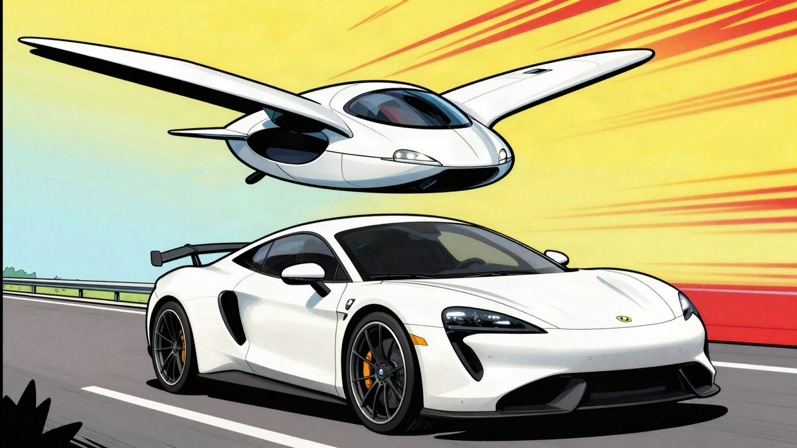

Xpeng je u trećem tromjesečju imao rekordnih 118.390 isporuka i prihod od oko 31,5 milijardi eura

Xpeng je objavio neslužbene rezultate za treće tromjesečje 2026.: rekordan prihod od oko 31,5 milijardi eura i rekordnih 118.390 isporuka, uz manji neto gubitak. Paralelno razvija Robotaxi, humanoidne robote i leteći auto, a za četvrto tromjesečje očekuje do 174.000 isporuka.
Xpeng je objavio neslužbene financijske rezultate za treće tromjesečje 2026. Ukupni prihod iznosio je 24,28 milijardi juana (oko 3,15 milijardi eura), što je 19,1 posto više nego lani i 23 posto više nego u drugom tromjesečju, a ujedno rekord za Xpeng. Isporučeno je 118.390 vozila, 15 posto više nego u prethodnom tromjesečju, što je također rekord.
Gubitak se smanjuje
Bruto marža u trećem tromjesečju iznosila je 18,9 posto, a marža na automobilima 13,1 posto, što je 1,0 postotni bod više nego u drugom tromjesečju. Neto gubitak pao je na 870 milijuna juana (oko 113 milijuna eura), s 1,34 milijarde juana (oko 174 milijuna eura) u drugom tromjesečju. Na kraju rujna Xpeng je imao 45,41 milijardu juana u gotovini (oko 5,9 milijardi eura), gotovo 5 milijardi juana više nego tri mjeseca ranije.
Prihod od prodaje automobila bio je 21,63 milijarde juana (oko 2,8 milijardi eura), a od usluga i ostalog 2,65 milijardi juana (oko 345 milijuna eura). Izdaci za istraživanje i razvoj porasli su 17,5 posto, na 2,85 milijardi juana (oko 370 milijuna eura), uglavnom za nove modele i AI tehnologije. Prodajna mreža broji 731 trgovinu u 253 grada, a Xpeng ima 4.035 vlastitih punionica.
Predsjednik uprave He Xiaopeng rekao je da je automobilski segment ušao u razdoblje brzog rasta, koji pokreću novi modeli i globalna ekspanzija, te da će se učinak ekonomije razmjera u idućim tromjesečjima poboljšavati.
Robotaxi, roboti i leteći auto
Xpeng Robotaxi je 26. listopada dobio dozvolu za demonstracijski rad na razini L4 u cijelom Guangzhouu. He Xiaopeng je dodao da nova generacija humanoidnog robota ide prema masovnoj proizvodnji do kraja godine.
Robotska divizija zaključila je prvi krug financiranja od više od 900 milijuna dolara (oko 800 milijuna eura), uz procijenjenu vrijednost od oko 43 milijarde juana (oko 5,6 milijardi eura). U rujnu je pokrenuta prva automatizirana linija za napredne univerzalne humanoidne robote.
Xpeng Aeroht, zrakoplovni ogranak, prema podacima Xpenga ima više od 7.000 narudžbi za razdvojivi leteći auto Land Aircraft Carrier. Tvornica je započela probnu proizvodnju s planiranim kapacitetom od 10.000 vozila godišnje. Pri punom radu linija bi trebala proizvoditi jedno vozilo svakih 30 minuta. Prototip hibridno-električne letjelice A868 s nagibnim krilima već je obavio prvi probni let. Ima šest sjedala, doseg od 500 km i najveću brzinu od 360 km/h.
Izgledi za zadnje tromjesečje
Za četvrto tromjesečje Xpeng očekuje 169.000 do 174.000 isporuka, 45,4 do 49,7 posto više nego lani. U listopadu je isporučeno 50.237 vozila, što je mjesečni rekord. Od toga je 13.326 isporučeno na inozemnim tržištima, 166 posto više nego lani, pa su ona sve važniji izvor rasta prodaje.
Izvor: MyDrivers (快科技)